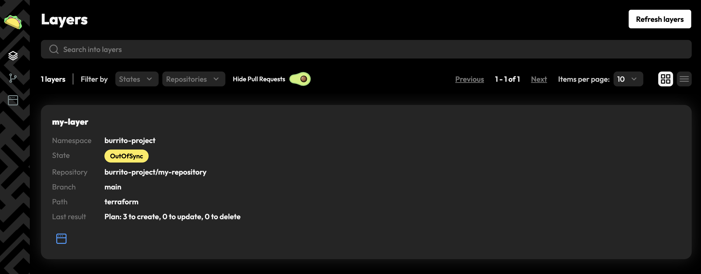

Burrito Drift Detection¶
Drift detection is the core feature of Burrito. It allows you to monitor the drift between your Terraform state and your infrastructure in real-time. Burrito continuously plans your Terraform code by launching runner pods that will download the Terraform code, plan it, and store the result in its datastore.
Exercise¶
Follow the steps below to set up Burrito on a local cluster and start planning your Terraform code automatically.
Requirements¶
Install Burrito¶
Install Burrito with Helm as described in the installation guide, using the provided values file.
helm upgrade --install burrito oci://ghcr.io/padok-team/charts/burrito -n burrito-system -f https://raw.githubusercontent.com/padok-team/burrito/main/docs/examples/values-simple.yaml
With this command, you installed burrito with the following configuration:
config:
burrito:
controller:
timers:
driftDetection: 10m # run drift detection every 10 minutes
onError: 10s # wait 10 seconds before retrying on error
waitAction: 1m # wait 1 minute before retrying on locked layer
failureGracePeriod: 30s # set a grace period of 30 seconds before retrying on failure (increases exponentially with the amount of failed retries)
datastore:
storage:
mock: true # use a mock storage for the datastore (useful for testing, not recommended for production)
tenants:
- namespace:
create: true
name: "burrito-project"
Burrito should be up and running in the burrito-system namespace.
Output:
NAME READY STATUS RESTARTS AGE
burrito-controllers-6945797c5d-kjfl2 1/1 Running 0 2m00s
burrito-datastore-94d999f54-kbg9z 1/1 Running 0 2m00s
burrito-server-764f75766b-qw5nx 1/1 Running 0 2m00s
Connect Burrito to Terraform code on GitHub¶
You will use the example Terraform code that we have prepared for you. This repository contains simple Terraform and Terragrunt with local random-pets resources that you can use to test Burrito.
Create a TerraformRepository resource in the burrito-system namespace:
kubectl apply -f https://raw.githubusercontent.com/padok-team/burrito/main/docs/examples/terraform-repository.yaml
Here is the content of the TerraformRepository resource that you have created. It references the GitHub repository containing the Terraform code.
It also specifies that the IaC is Terraform code (as opposed to OpenTofu code). This setting will propagate to all layers linked to this repository by default, but can be overridden at the layer level.
apiVersion: config.terraform.padok.cloud/v1alpha1
kind: TerraformRepository
metadata:
name: my-repository
namespace: burrito-project
spec:
repository:
url: https://github.com/padok-team/burrito-examples
terraform:
enabled: true
Create a TerraformLayer resource in the burrito-system namespace, referencing the TerraformRepository you just created. For now, the autoApply is set to false, so the layer will only plan the Terraform code and not apply it.
kubectl apply -f https://raw.githubusercontent.com/padok-team/burrito/main/docs/examples/terraform-layer.yaml
apiVersion: config.terraform.padok.cloud/v1alpha1
kind: TerraformLayer
metadata:
name: my-layer
namespace: burrito-project
spec:
branch: main
path: terraform
remediationStrategy:
autoApply: false
repository:
name: my-repository
namespace: burrito-project
Check that your Terraform code is being planned by Burrito:
Output:
The TerraformLayer should have been updated with the result of the plan. You can check the status of the TerraformLayer directly by querying the TerraformLayer resource, or by checking the burrito UI.
Output:
NAME STATE REPOSITORY BRANCH PATH LAST RESULT
my-layer ApplyNeeded my-repository main terraform Plan: 3 to create, 0 to update, 0 to delete

Activate the autoApply feature by updating the TerraformLayer resource:
kubectl patch tfl my-layer -n burrito-project --type merge --patch '{"spec":{"remediationStrategy":{"autoApply":true}}}'
Check that the Terraform code was applied:
Output:
NAME READY STATUS RESTARTS AGE
my-layer-apply-bxlcr 0/1 Completed 0 54s
my-layer-plan-jv86k 0/1 Completed 0 7m22s
Output:
NAME STATE REPOSITORY BRANCH PATH LAST RESULT
my-layer Idle my-repository main terraform Apply Successful
Conclusion¶
You have successfully set up Burrito on a local cluster and planned your Terraform code automatically. You can now monitor the drift between your Terraform state and your infrastructure in real-time.
Next steps¶
- Learn how to configure a PR/MR workflow